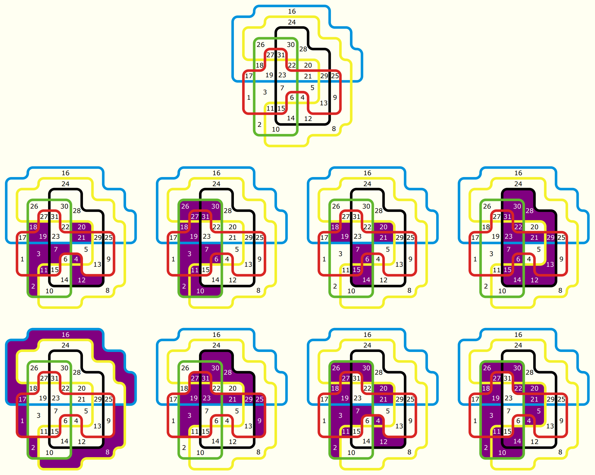

Solution: Venn-ary Encoding
Answer: KEYBOARD
Written by Norm Do
This puzzle consists of a Venn Diagram as well as various sets of numbers which range from 1 to 31 (except for 24, which labels a region in the diagram). This might hint that we want to associate a number with each region in the diagram.
The combination of the number 31, which is 25-1, the presence of five colours (in vertical lines and in the diagram, which divides regions into two sets: belonging to a colour or not belonging to a colour) and the title, which vaguely hints at something-ary encoding being useful, should hopefully clue the solve towards considering a binary encoding of each number. In particular, if the five colours are ordered in the order of their lines, the number 24 is in the blue and yellow regions, which are the first two colours, and 24=110002, which has 1s in the first two binary places and 0s elsewhere.
Thus, considering labelling each region with a binary number formed as follows:
- The sixteens digit is 1 if the region is in the blue area and 0 otherwise.
- The eights digit is 1 if the region is in the yellow area and 0 otherwise.
- The fours digit is 1 if the region is in the black area and 0 otherwise.
- The twos digit is 1 if the region is in the green area and 0 otherwise.
- The ones digit is 1 if the region is in the red area and 0 otherwise.
Each region thus gets a unique label from 1 to 31.
Then, for each set, consider the shape formed by combining the regions with the given numbers. These all form letters, in particular, spelling out KEYBOARD.
Click to show the various relevant regions and labels
